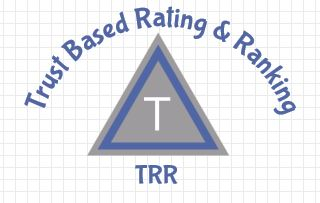

To address the challenges associated with selection and ranking of apps, need to conduct in-depth investigation that will consider all available views of apps and generate a comprehensive ranking of similar apps. This research has developed a trust based holistic rating and ranking technique by investigating the programmatic views (i.e., analyzing the app code) and the user views (i.e., analyzing user reviews) of publically available apps. The ranking technique uses the principles of static code analysis, theory of belief, and NLP schemes. The research is empirically validated in the context of the Google PlayStore and the results are compared against prevalent ranking alternatives. Our experiments indicate that proposed holistic ranking that encompasses both the internal and external views is a better alternative than any ranking that focuses only on the internal or external view.

- © Untitled. All rights reserved.